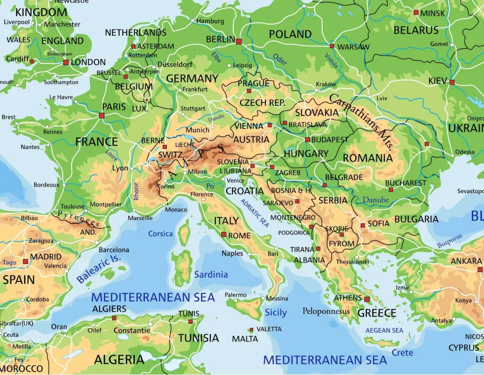
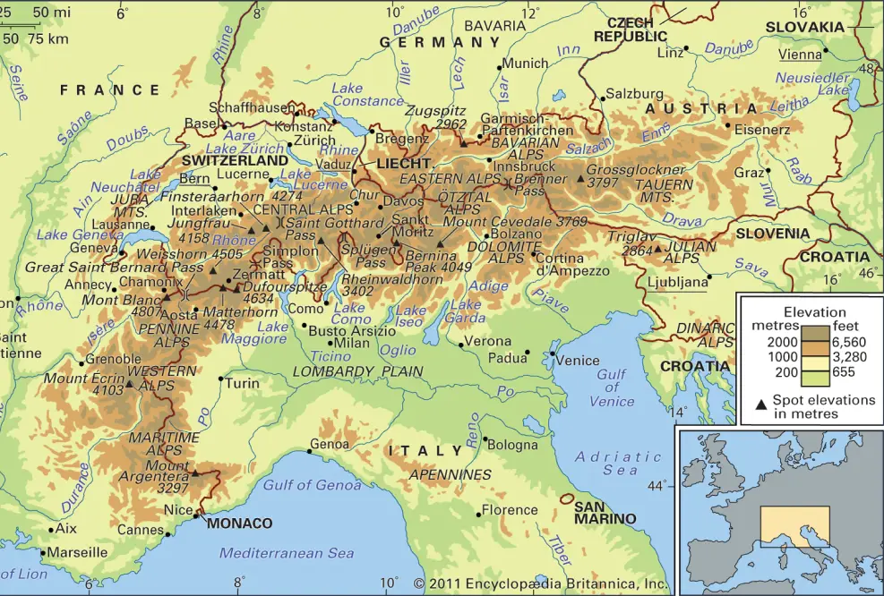
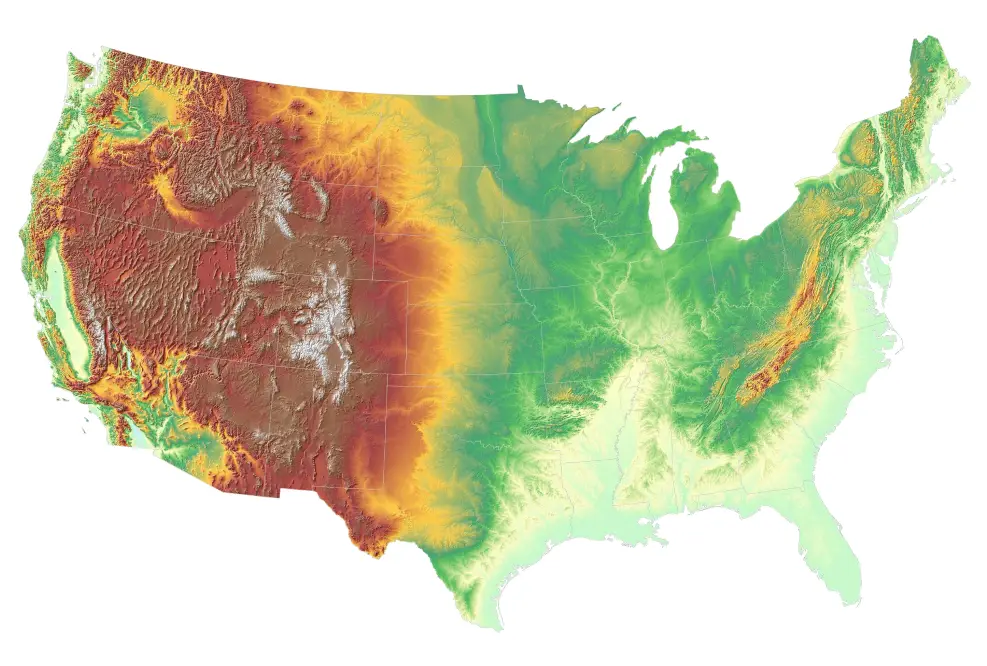

Locations

While born from necessity in the Dolomite mountains over a century ago, the "iron path" has since spread across the globe. Today, you can find via ferratas on nearly every continent, each offering a unique blend of culture, scenery, and adventure. From historic routes in the Alps to modern marvels in North America and beyond, there's a world of protected climbing waiting to be explored.
The European Alps

The Alps are the undisputed heartland of via ferrata, with thousands of routes crisscrossing Italy, Austria, France, and Switzerland. The Italian Dolomites, in particular, are home to many of the original paths, often following historic World War I routes and offering breathtaking scenery and a deep sense of history. Whether you seek towering limestone walls or scenic alpine ridges, the Alps provide a classic and unparalleled experience.
North America

The via ferrata scene is rapidly expanding across North America, offering modern, well-equipped routes in spectacular settings. Hotspots like Telluride, Colorado, and various locations throughout the Canadian Rockies boast purpose-built courses that combine thrilling exposure with impeccable safety standards. These routes are perfect for those seeking accessible, high-adrenaline mountain adventures closer to home.
Global Hotspots
Beyond the Alps and North America, unique via ferrata experiences can be found in some of the world's most stunning landscapes. Ascend Mount Kinabalu in Malaysia on the world's highest via ferrata, or traverse the cliffs of New Zealand and Kenya. These global hotspots offer a chance to combine the thrill of protected climbing with unforgettable international travel.